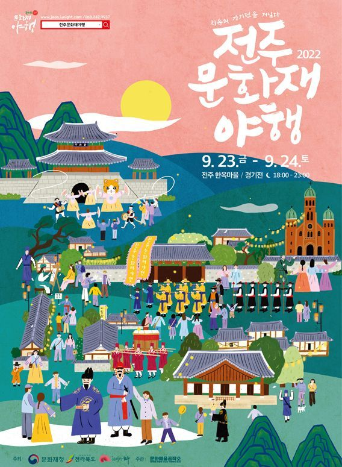

01 / 야경
빛으로 만나는 진주성
문화유산의 아름다움을 빛과 함께 감상하는 야간 산책
18:00 – 23:00JINJU CULTURAL NIGHT 2026 · 가상 행사 시안
역사와 문화가 빛으로 이어지는 밤,
진주의 아름다운 이야기를 만나보세요.
※ 날짜와 프로그램은 웹페이지 제작을 위한 예시입니다.

ABOUT THE FESTIVAL
고즈넉한 문화유산과 골목길, 그리고 사람들의 이야기가 어우러지는 특별한 밤. 진주 야행에서 낮과는 다른 진주의 매력을 만나보세요.
NIGHT PROGRAM
문화유산의 아름다움을 빛과 함께 감상하는 야간 산책
18:00 – 23:00따뜻한 등불을 따라 걷는 원도심 골목 이야기
18:30 – 22:00전통 음악과 이야기 공연으로 만나는 우리 문화
19:00 – 21:30PLAN YOUR NIGHT
공연과 체험의 시간을 확인하고, 마음에 드는 프로그램을 골라보세요.
VISIT JINJU
방문 전 교통편과 주차 정보를 확인해 주세요.
행사 장소
진주성 및 원도심 일원 (예시)
주차 안내
행사장 주변 공영주차장 이용 권장
혼잡이 예상되니 대중교통을 이용해 주세요.
문의 안내
행사 운영 사무국 (가상)
운영시간 09:00 – 18:00